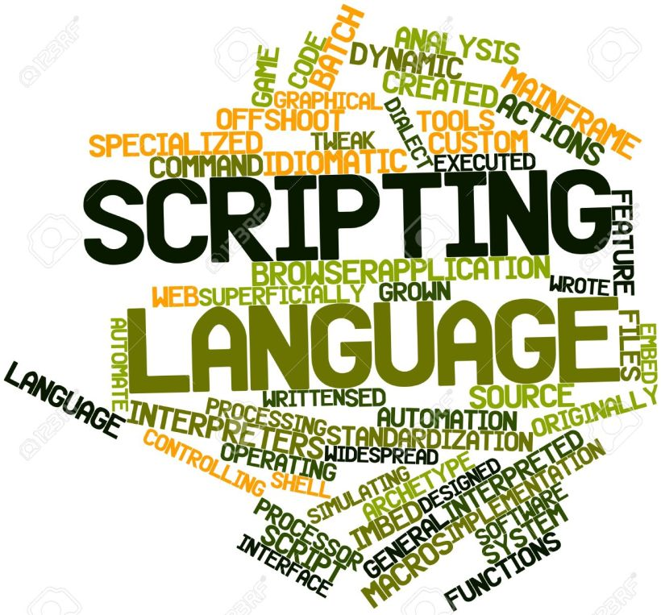

As the name suggests, the scripting language is a type of language which is used to write scripts. Unlike other languages, these scripts execute on the runtime. A script or scripting language allows the high-level programs to interpret and execute one command at a time. In the scripting language, the programs are not directly compiled by the processor but are interpreted instead. The most famous scripting language is JavaScript usually embedded in HTML tags. It often found alongside Java and C++.
WHAT IS A SCRIPT?
A script or scripting language is a computer language with a series of commands within a file that is capable of being executed without being compiled. Good examples of server-side scripting languages include Perl, PHP, and Python. The best example of a client side scripting language is JavaScript.
A scripting language is a programming language designed for integrating and communicating with other programming languages. Some of the most widely used scripting languages are JavaScript, VBScript, PHP, Perl, Python, Ruby, ASP and Tcl. Since a scripting language is normally used in conjunction with another programming language, they are often found alongside HTML, Java or C++.
EXAMPLES OF SCRIPTING LANGUAGES
JavaScript
ASP
JSP
PHP
PERL
Python

ADVANTAGES OF SCRIPTING LANGUAGES
Open source, allowing users to view and edit the script if needed.
Does not require the file to be compiled, but may be when necessary.
Easy to learn and write.
Easy to port between different operating systems.
Much faster to develop than an actual program - some individuals and companies write scripts as a prototype for actual programs.
DISADVANTAGES OF SCRIPTING LANGUAGES
Open source, allows others to view source code, which may be prohibited by some companies.
Requires the user to install an interpreter or separate program before the script can be run.
In some situations, they may be slower than a compiled program.
CODE:
<!DOCTYPE html>
<html lang="en">
<head>
<meta charset="utf-8">
<title> Scripting Languages </title>
</head>
<body>
<header>
<h1> LEARN TECH HERE <br />
ALL ABOUT COMPUTER LANGUAGES</h1>
<img src="header.jpg" alt="tech" width="1200" height="200" />
</header>
<nav>
<ul>
<li><a href="main.html"> Home </a></li>
<li><a href="file1.html">Programming Languages </a>
<ul>
<li><a href="file6.html">JAVA</a></li>
</ul>
</li>
<li><a href="file4.html"> Scripting Languages</a>
<ul>
<li><a href="file7.html">JavaScript</a></li>
</ul>
</li>
<li><a href="file5.html"> Markup Languages</a>
<ul>
<li><a href="file8.html">HTML </a></li>
</ul>
</li>
<li><a href="file2.html"> About Us </a></li>
<li><a href="file3.html"> Contact Us </a></li>
</ul>
</nav>
<!-- Using underline <u> tag -->
<h1> SCRIPTING LANGUAGES</h1>
<p>As the <strong><u>name</u></strong> suggests, the scripting language is a <strong><u>type</u></strong> of language which is used to <strong><u>write scripts</u></strong>. Unlike other languages, these scripts <strong><u>execute</u></strong> on the <strong><u>runtime</u></strong>. A script or scripting language allows the <strong><u>high-level</u></strong> programs to <strong><u>interpret</u></strong> and execute one <strong><u>command</u></strong> at a time. In the scripting language, the programs are not <strong><u>directly</u></strong> compiled by the processor but are <strong><u>interpreted</u></strong> instead. The most <strong><u>famous</u></strong> scripting language is <strong><u>JavaScript</u></strong> usually embedded in HTML tags. It often found alongside <strong><u>Java and C++</u></strong>. </p>
<h2> WHAT IS A SCRIPT? </h2>
<p>A <strong><u>script or scripting</u></strong> language is a computer language with a series of commands within a file that is capable of being <strong><u>executed</u></strong> without being compiled. Good <strong><u>examples</u></strong> of server-side scripting languages include Perl, PHP, and Python. The best example of a client side scripting language is JavaScript. <br />
A scripting language is a programming language designed for <strong><u>integrating and communicating</u></strong> with other programming languages. Some of the most widely used scripting languages are JavaScript, VBScript, PHP, Perl, Python, Ruby, ASP and Tcl. Since a scripting language is normally used in conjunction with another programming language, they are often found <strong><u>alongside</u></strong> HTML, Java or C++. </p>
<h2> EXAMPLES OF SCRIPTING LANGUAGES </h2>
<ul>
<li> JavaScript </li>
<li> ASP </li>
<li> JSP </li>
<li> PHP </li>
<li> PERL </li>
<li> Python </li>
</ul>
<!-- Using ordered List <ol> -->
<h2> ADVANTAGES OF SCRIPTING LANGUAGES </h2>
<ol>
<li> Open source, allowing users to view and edit the script if needed.</li>
<li> Does not require the file to be compiled, but may be when necessary.</li>
<li>Easy to learn and write. </li>
<li>Easy to port between different operating systems. </li>
<li>Much faster to develop than an actual program - some individuals and companies write scripts as a prototype for actual programs. </li>
</ol>
<h2> DISADVANTAGES OF SCRIPTING LANGUAGES </h2>
<ol>
<li>Open source, allows others to view source code, which may be prohibited by some companies. </li>
<li>Requires the user to install an interpreter or separate program before the script can be run. </li>
<li>In some situations, they may be slower than a compiled program. </li>
</ol>
<h3> CODE: </h3>
<progress max="100" value="60" >
</progress>
<br>
<br>
<br>
<br>
<footer> Copyright@LearnTechHere2018 </footer>
</body>
</html>